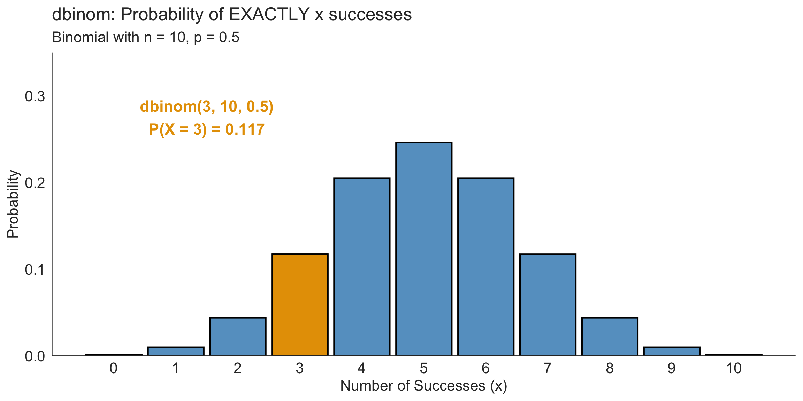
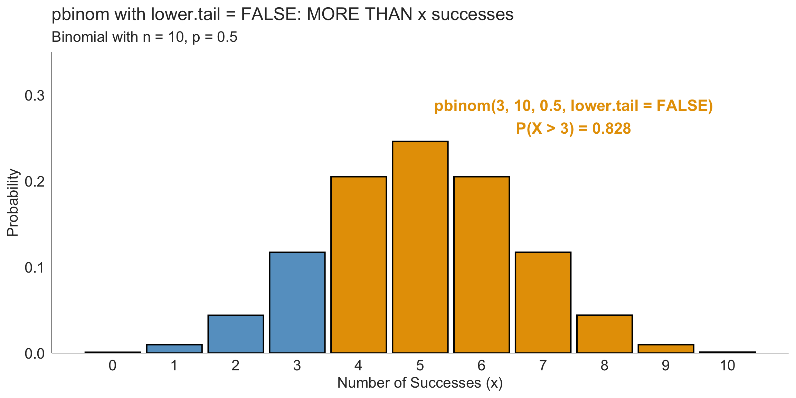

Midterm Review
Key Concepts from Lessons 1–9
2026-02-11
Today’s Agenda
- Quick overview of exam structure
- Key concepts review
- Study design
- Probability and Bayes’ Theorem
- Distributions (focus on R functions!)
- Sampling distributions and CLT
- Confidence intervals
- Hypothesis testing
- Your questions
The midterm opens TODAY at 3:00 PM and closes Monday at 11:00 PM
Exam Logistics
Exam Details
Format:
- 8 parts, 120 points total
- Designed for 3-5 hours completion
- Mix of conceptual questions, R code, and interpretation
Resources allowed:
- ✅ Course materials (slides, homework, textbook)
- ✅ R documentation
- ✅ Your notes
- ❌ Other students
- ❌ AI assistants
- ❌ Online help forums
Submit both .qmd and .html files!
What’s Covered
Part 1: Study design (10 pts)
Part 2: Descriptive stats & viz (15 pts)
Part 3: Probability (15 pts)
Part 4: Distributions (20 pts)
Part 5: Sampling distributions & CLT (15 pts)
Part 6: Confidence intervals (15 pts)
Part 7: Hypothesis testing (20 pts)
Part 8: Integration (10 pts)
Key datasets: nhanes.samp (you’ve used this in HW!)
General Tips
Before you start:
- Read all instructions carefully
- Set up your workspace (load packages, data)
- Check that code chunks run
While working:
- Show your work and reasoning
- Provide interpretations in complete sentences
- Use comments in your R code
- Check that your document renders frequently
- Save regularly
Before submitting:
- Render one final time
- Check that all answers are complete
- Verify both files are being submitted
Quick Concepts Review
Study Design: The Basics
Experiments vs. Observational Studies
Experiment:
- Researchers assign treatments
- Random assignment
- Can establish causation
- Example: Drug trial with treatment vs. placebo
Observational Study:
- Researchers observe without interfering
- No random assignment
- Can only show association
- Example: Reviewing medical records
Why does this matter?
Only randomized experiments can establish causal relationships!
Sampling Concepts
Key terms:
- Population vs. Sample
- Simple random sample (each individual has equal chance)
- Convenience sample (easily accessible - often biased)
Confounding variables:
- Associated with both explanatory and response variables
- Can make it look like there’s a causal relationship when there isn’t
- Example: Exercise and cardiovascular health might both be related to socioeconomic status
R Skills Review: Data Wrangling & Visualization
dplyr: The grammar of data manipulation
dplyr provides a consistent set of verbs for data manipulation:
| Function | What it does |
|---|---|
filter() |
Keep rows that meet conditions |
select() |
Keep or drop columns |
mutate() |
Create or modify columns |
arrange() |
Sort rows |
group_by() |
Group data for summaries |
summarize() |
Calculate summary statistics |
These verbs can be chained together with %>% for powerful data transformations.
ggplot2: The Basic Template
The ggplot2 pattern
Key geoms you need to know:
ggplot2: Example
library(ggplot2)
library(oibiostat)
data("nhanes.samp")
# Histogram
ggplot(nhanes.samp, aes(x = Height)) +
geom_histogram(bins = 20) +
labs(title = "Distribution of Height",
x = "Height (cm)",
y = "Count")
# Boxplot by group
ggplot(nhanes.samp,
aes(x = Gender, y = Weight, fill = Gender)) +
geom_boxplot() +
labs(title = "Weight by Gender",
x = "Weight (kg)",
y = "Age (years)")
Remember: Start with ggplot(), then add layers with +
dplyr + rstatix: Summary Statistics
Example:
dplyr only: Summary Statistics
Example:
# Summary stats by one group
nhanes.samp %>%
group_by(Gender) %>%
summarise(n = sum(!is.na(Height)),
mean = mean(Height, na.rm = TRUE),
sd = sd(Height, na.rm = TRUE))
# Summary stats by multiple groups
nhanes.samp %>%
group_by(Gender, SmokeNow) %>%
summarise(n = sum(!is.na(Weight)),
mean = mean(Weight, na.rm = TRUE),
sd = sd(Weight, na.rm = TRUE))Categorical Data: janitor::tabyl()
Example:
Probability
Probability Notation Quick Reference
Basic probabilities:
- Marginal: \(P(A)\) - probability of \(A\) alone
- Joint: \(P(A \text{ and } B)\) - probability of both
- Conditional: \(P(A \mid B)\) - probability of \(A\) given \(B\)
Key formula:
\[P(A \mid B) = \frac{P(A \text{ and } B)}{P(B)}\]
Independence:
Events \(A\) and \(B\) are independent if: \(P(A \text{ and } B) = P(A) \times P(B)\)
Probability Rules to Remember
General Addition Rule:
If \(A\) and \(B\) are any two events:
\[P(A \text{ or } B) = P(A) + P(B) - P(A \text{ and } B)\]
We subtract \(P(A \text{ and } B)\) because those outcomes were counted twice.
General Multiplication Rule:
\[P(A \text{ and } B) = P(A \mid B) \times P(B)\]
This connects joint and conditional probabilities, and leads directly to Bayes’ Theorem!
Special case: Independent events
If \(A\) and \(B\) are independent: \(P(A \text{ and } B) = P(A) \times P(B)\)
Bayes’ Theorem: The Pattern
You’ll almost always use it in this form:
\[
\begin{aligned}
P(A \mid B) &= \frac{P(B \mid A) \times P(A)}{P(B)} \\
\\
&= \frac{P(B \mid A) \times P(A)}{P(B \mid A) \times P(A) + P(B \mid A^c) \times P(A^c)}
\end{aligned}
\]
In medical testing context:
\[P(\text{Disease} \mid \text{Test+}) = \frac{\text{sensitivity} \times \text{prevalence}}{\text{sensitivity} \times \text{prevalence} + (1-\text{specificity}) \times (1-\text{prevalence})}\]
Pro tip: Calculate numerator and denominator separately, then divide!
Bayes’ Theorem: Step-by-Step
Given: Sensitivity = 0.90, Specificity = 0.85, Prevalence = 0.02
# Step 1: Set up
sensitivity <- 0.90 # P(Test + | Disease)
specificity <- 0.85 # P(Test - | No Disease)
prevalence <- 0.02 # P(Disease)
# Step 2: Calculate P(Test + | No Disease)
p_pos_given_healthy <- 1 - specificity
p_pos_given_healthy[1] 0.15[1] 0.018# Step 4: Denominator (all positives)
denominator <- sensitivity * prevalence + p_pos_given_healthy * (1 - prevalence)
denominator[1] 0.165[1] 0.1090909Distributions: The R Functions
The Four Functions Pattern
Every distribution in R has 4 functions:
d-functions: dbinom(), dnorm(), dpois()
- “density” or “probability mass”
- Exactly x
- Returns: P(X = x)
p-functions: pbinom(), pnorm(), ppois()
- “cumulative probability”
- At most x (or at least with
lower.tail = FALSE) - Returns: P(X ≤ x) or P(X > x)
q-functions: qbinom(), qnorm(), qpois()
- “quantile”
- What value gives this probability?
- Returns: value of x
r-functions: rbinom(), rnorm(), rpois()
- “random”
- Generate random samples
- Returns: random values
Binomial Functions in R
The four binomial functions:
# d = probability of EXACTLY x successes
dbinom(x = 3, size = 10, prob = 0.5)
# "What's P(X = 3)?"
# p = cumulative probability (at most x OR at least x)
pbinom(q = 3, size = 10, prob = 0.5)
# "What's P(X ≤ 3)?" (default)
pbinom(q = 3, size = 10, prob = 0.5, lower.tail = FALSE)
# "What's P(X > 3)?"
# q = quantile (what value gives this probability?)
qbinom(p = 0.25, size = 10, prob = 0.5)
# "What value has 25% of the distribution below it?"
# r = random samples
rbinom(n = 100, size = 10, prob = 0.5)
# "Give me 100 random draws"Visual: dbinom() - EXACTLY
Visual: pbinom() - AT MOST (default)

Visual: pbinom(…, lower.tail = FALSE) - MORE THAN
The lower.tail = TRUE/FALSE Concept
Visual Guide
|--------------●-------------|
lower tail x upper tail
(left) (right)
lower.tail = TRUE → gives you \(P(X \le x)\) — everything to the LEFT of (and including) x
lower.tail = FALSE → gives you \(P(X \gt x)\) — everything to the RIGHT of x
Quick decision rule:
- Question has “less than” or “at most” →
lower.tail = TRUE(default) - Question has “greater than” or “at least” →
lower.tail = FALSE
Common Confusion: “At least 5” (Discrete Distributions)
DISCRETE distributions only!
This slide applies to binomial and Poisson (discrete). For Normal (continuous), \(P(X \ge 5) = P(X \gt 5)\) - no adjustment needed!
Question: What is \(P(X \ge 5)\) for a binomial distribution?
Step 1: Translate to something the computer understands
- “At least 5” = “5 or more” = “greater than 4”
- So: \(P(X \ge 5)\) = \(P(X \gt 4)\)
Step 2: Code it
Key Point
For discrete distributions: “\(X \ge 5\)” is the same as “\(X \gt 4\)” because we can’t have \(4.5\) successes!
Practice: Binomial Questions
A vaccine is 75% effective. You vaccinate 20 people.
Which R function do you use?
Question 1: What’s the probability that exactly 15 are protected?
Question 2: What’s the probability that at most 12 are protected?
Practice: Binomial Answers (1/2)
A vaccine is 75% effective. You vaccinate 20 people.
Question 1: What’s the probability that exactly 15 are protected?
Question 2: What’s the probability that at most 12 are protected?
Practice: Binomial Answers (2/2)
Question 3: What’s the probability that at least 18 are protected?
[1] 0.09126043
Question 4: What’s the expected number protected?
Normal Distribution Functions
The same pattern applies!
# d = density (height of curve at x)
dnorm(x = 120, mean = 100, sd = 15)
# Rarely used in practice
# p = cumulative probability
pnorm(q = 120, mean = 100, sd = 15)
# "What proportion have values ≤ 120?"
pnorm(q = 120, mean = 100, sd = 15, lower.tail = FALSE)
# "What proportion have values > 120?"
# q = quantile (most common!)
qnorm(p = 0.95, mean = 100, sd = 15)
# "What value has 95% below it?" (95th percentile)
# r = random samples
rnorm(n = 100, mean = 100, sd = 15)
# "Give me 100 random values from this distribution"Visual: Normal Distribution

Practice: Normal Distribution
Blood pressure is Normal with mean = 120 mmHg, sd = 15 mmHg.
Which R function?
Practice: Normal Answers (1/2)
[1] 0.1586553[1] 0.1586553
Practice: Normal Answers (2/2)
Sampling Distributions & CLT
Central Limit Theorem: What You Need to Know
The CLT in plain language
For a random sample of size \(n\) from ANY population with mean \(\mu\) and SD \(\sigma\):
The sampling distribution of \(\bar{X}\) is approximately normal when \(n\) is large (\(\ge 30\))
With:
- Mean = \(\mu\)
- Standard Error = \(\sigma / \sqrt{n}\)
Why this matters:
- We can use normal distribution tools even if data aren’t normal
- Larger samples → smaller standard error → more precise estimates
- This is the foundation for confidence intervals and hypothesis tests!
Standard Error vs. Standard Deviation
Don’t confuse these!
Standard Deviation (\(s\) or \(\sigma\)):
- Measures spread of individual observations
- Describes variability in the data
- Formula: \(s = \sqrt{\frac{\sum(x_i - \bar{x})^2}{n-1}}\)
Standard Error (SE):
- Measures uncertainty of the sample mean
- Describes variability of \(\bar{x}\) across (theoretical) samples
- Formula: \(SE = \frac{s}{\sqrt{n}}\)
Key insight: SE gets smaller as \(n\) increases, but \(s\) stays roughly the same!
Example: CLT in Action
Population: Mean = 5.1 hours, SD = 1.9 hours, right-skewed
Sample: n = 40
What’s the sampling distribution of \(\bar{X}\)?
# Parameters
mu <- 5.1
sigma <- 1.9
n <- 40
# Sampling distribution
mean_xbar <- mu
se_xbar <- sigma / sqrt(n)
mean_xbar[1] 5.1[1] 0.3004164# Example probability about the sample mean, P(Xbar > 5.6)
pnorm(5.6, mean = mean_xbar, sd = se_xbar, lower.tail = FALSE)[1] 0.04802059
Sampling distribution: approximately Normal(mean = \(mu\), sd = \(\frac{s}{\sqrt{n}}\)). Even though the original data are right-skewed!
Confidence Intervals
Confidence Interval Formula
General form
\[\text{point estimate} \pm \text{critical value} \times SE\]
For a mean:
\[\bar{x} \pm t^* \times \frac{s}{\sqrt{n}}\]
Where:
- \(\bar{x}\) = sample mean
- \(t^*\) = critical value from t-distribution with \(df = n-1\)
- \(s\) = sample standard deviation
- \(n\) = sample size
Calculating a 95% CI in R (1/2)
Calculating a 95% CI in R (2/2)
Interpreting Confidence Intervals
Correct interpretation
“We are 95% confident that the population mean is between 13.5 and 14.9.”
What this means:
- If we repeated this process many times (new samples, new CIs)
- About 95% of those intervals would contain the true \(\mu\)
- We don’t know if this specific interval contains \(\mu\), but we’re using a reliable method
Common mistakes - DON’T SAY:
- ❌ “There’s a 95% probability that \(\mu\) is in this interval”
- ❌ “95% of the data are in this interval”
- ❌ “We’re 95% sure the sample mean is in this interval”
What Affects CI Width?
Margin of error = \(t^* \times \frac{s}{\sqrt{n}}\)
To get a narrower CI:
- Increase sample size (\(n\) ↑ → SE ↓ → narrower CI)
- Decrease confidence level (95% → 90% → smaller \(t^*\) → narrower CI)
- But this means less confidence!
- Reduce variability (\(s\) ↓ → SE ↓ → narrower CI)
- Often not under our control
Trade-off: Precision vs. Confidence
Hypothesis Testing
The Hypothesis Testing Framework
Six steps:
- State hypotheses: \(H_0\) and \(H_A\)
- Set significance level: Usually \(\alpha = 0.05\)
- Check assumptions: Independence, normality/large sample
- Calculate test statistic: \(t = \frac{\bar{x} - \mu_0}{s/\sqrt{n}}\)
- Find p-value: Probability of seeing data this extreme if \(H_0\) true
- Make conclusion: Reject \(H_0\) if p-value < \(\alpha\)
Writing Hypotheses
Template
\(H_0: \mu = \mu_0\) (null value)
\(H_A: \mu \neq \mu_0\) (two-sided) OR \(\mu > \mu_0\) OR \(\mu < \mu_0\) (one-sided)
Example: Is mean body temperature different from 98.6°F?
- \(H_0: \mu = 98.6\)
- \(H_A: \mu \neq 98.6\)
In words:
- \(H_0\): The population mean body temperature is 98.6°F
- \(H_A\): The population mean body temperature is not 98.6°F
P-values: What They Mean
Definition
The p-value is the probability of observing data as extreme as (or more extreme than) what we observed, assuming \(H_0\) is true.
Interpretation guide:
- p-value < 0.05 → Strong evidence against \(H_0\) → Reject \(H_0\)
- p-value ≥ 0.05 → Insufficient evidence → Fail to reject \(H_0\)
What p-values are NOT
- ❌ NOT the probability that \(H_0\) is true
- ❌ NOT the probability of making an error
- ❌ NOT a measure of effect size or importance
One-Sample t-test in R
Example:
Understanding t.test() Output
One Sample t-test
data: nhanes.samp$Pulse
t = 2.1383, df = 170, p-value = 0.03392
alternative hypothesis: true mean is not equal to 72
95 percent confidence interval:
72.15999 76.00376
sample estimates:
mean of x
74.08187
What to report:
- t-statistic: How many SEs away from null value
- p-value: Evidence against \(H_0\)
- 95% CI: Range of plausible values for \(\mu\)
- Sample mean: Our point estimate
Connection: CIs and Hypothesis Tests
Key relationship
For a two-sided test at \(\alpha = 0.05\):
If the 95% CI does NOT contain \(\mu_0\), then we reject \(H_0: \mu = \mu_0\)
If the 95% CI DOES contain \(\mu_0\), then we fail to reject \(H_0\)
Both methods use the same math - just different framing!
- CI: “What values are plausible for \(\mu\)?”
- Hypothesis test: “Is this specific value plausible?”
Final Reminders
Statistical Significance vs. Practical Significance
Don’t confuse these!
Statistical significance (p < 0.05):
- Evidence that there’s a real effect
- Doesn’t tell you if the effect matters
Practical/Clinical significance:
- Effect is large enough to matter in real-world terms
- You must judge this based on context
Example: A drug lowers blood pressure by 0.5 mmHg (p = 0.001)
- Statistically significant? ✅ Yes
- Clinically meaningful? ❌ No (too small to affect patient outcomes)
Common Mistakes to Avoid
- Forgetting to check assumptions before running tests
- Confusing standard deviation and standard error
- Using
lower.tail = TRUEwhen you needFALSE(or vice versa) - Misinterpreting p-values and confidence intervals
- Forgetting to include
na.rm = TRUEwhen there are missing values - Not rendering your document before submitting
Pro tip: When using pbinom() or ppois(), sketch a quick picture to check if you want the left or right tail!
Exam Strategy
Time management:
- Don’t get stuck on one question
- Move on and come back if needed
- Leave buffer time for rendering and checking
Interpretation questions:
- Write in complete sentences
- Reference numbers from your calculations
- Connect to context (not just abstract statistics)
Coding questions:
- Show your work (don’t just give answers)
- Use comments to explain your logic
- Check that your code actually runs!
Resources
During the exam:
- Lecture slides (especially the summary slides)
- Homework solutions (you’ve seen similar questions!)
- R help:
?t.test,?pnorm, etc.
After you submit:
- The exam will close Monday at 11 PM
- Solutions will be available after
- We’ll get feedback to you within a week
- Remember: This is a learning experience!
Questions?
Your Turn!
What questions do you have?
- Concepts that are still unclear?
- R functions you’re unsure about?
- Specific exam questions you want to discuss?
Remember:
- Exam opens today at 3 PM
- You have until Monday at 11 PM
- You’ve got this! 💪
Good luck!
You’re well prepared:
- ✅ You’ve done the homework
- ✅ You’ve come to class
- ✅ You’ve practiced with R
- ✅ You know where to find help
Trust your preparation and think carefully about each question.
BMSC 620 | Midterm Review